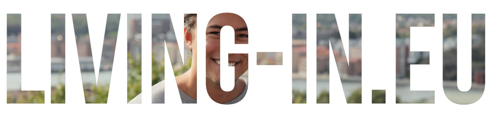
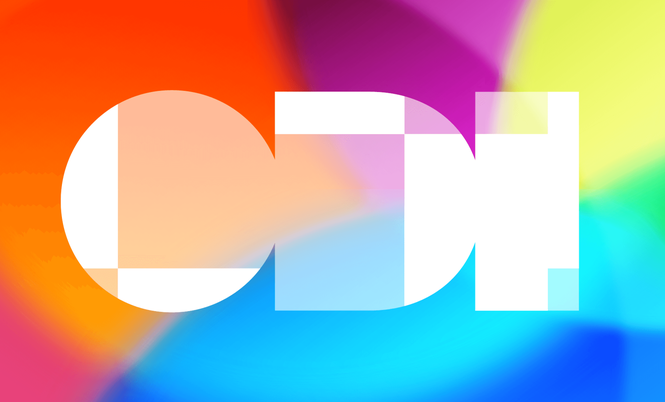

Cities Network Related Initiatives
City networks and support programmes strengthen local and regional authorities by promoting collaboration, joint procurement, knowledge exchange, and training.
They act as multipliers, embedding digital twins and AI-enabled services in communities of practice.
NetZeroCities
Short Description:
NetZeroCities helps European cities overcome structural, institutional, and cultural barriers to achieve climate neutrality by 2030. Funded by the Horizon 2020 Research and Innovation Programme, it works as a service-oriented platform supported by world-class practitioners.
It provides tools, resources, and expertise through a one-stop platform and offers dedicated services to cities that are part of the EU’s Mission “100 Climate-Neutral and Smart Cities by 2030”. It also supports pilots to test climate-neutral pathways and runs a Twinning Learning Programme for peer-to-peer exchange.
Key role in the LDT Ecosystem:
NetZeroCities includes prospective user groups of LDT services with clear climate neutrality objectives and needs, making it a critical stakeholder for alignment.
Relevance to LDT4SSC:
- Provides a sustainability-driven user base for LDT pilots.
- Contributes insights from climate neutrality pilots and peer-learning programmes.
- Supports alignment of LDT4SSC with the EU Climate-Neutral Cities Mission.
Key Assets and Resources:
[Case Studies, Policy Briefs per Smart Communities domains]
Webpage / Reference Link:
https://netzerocities.eu/
Main contact point:
- hello@netzerocities.eu
Living-in.EU Community

Short Description:
Living-in.EU is a European community of cities, regions, and stakeholders working together to accelerate digital transformation in urban areas. It supports Local Digital Twins (LDTs), smart cities, and data spaces by offering a platform for collaboration, funding access, and best practices.
The initiative facilitates collaboration on digital transformation governance, supports LDT projects through peer learning, and advocates for EU policies that benefit cities. The community includes more than 100 cities, regions, and stakeholders across Europe.
Key role in the LDT Ecosystem:
Living-in.EU provides a platform for cities to collaborate on LDT governance, interoperability, and funding.
Relevance to LDT4SSC:
- Aligns with LDT4SSC goals of city collaboration and digital transformation.
- Facilitates knowledge sharing, advocacy, and peer learning for LDT adoption.
- Helps cities access EU funding for LDT projects.
Key Assets and Resources:
[Living-in.EU resources and community platform ]
Webpage / Reference Link:
https://living-in.eu
Main contact point:
- info@oascities.org
Open Data Institute (ODI)

Short Description:
The ODI Data Ecosystem Mapping Tool is a framework developed by the Open Data Institute to help organizations, cities, and communities visualize, analyze, and optimize their data ecosystems. It supports Local Digital Twins (LDTs) by providing a structured approach to identify stakeholders, data flows, governance models, and interdependencies.
The tool improves transparency in data ecosystems, fosters collaboration by clarifying roles and responsibilities, and supports data-driven decision-making for urban planning and sustainability. It helps map data ecosystems to understand roles, relationships, and data flows in smart cities, while supporting stakeholder engagement by identifying key actors such as cities, businesses, NGOs, and citizens.
Key role in the LDT Ecosystem:
The ODI tool provides a structured methodology to map and analyze data ecosystems, ensuring transparency and collaboration in LDTs. It also supports stakeholder engagement and compliance by visualizing data flows, risks, and opportunities in alignment with EU regulations.
Relevance to LDT4SSC:
- Provides a framework for mapping data ecosystems in LDT projects.
- Helps identify key actors and their roles in pilots.
- Visualizes data sharing rules, risks, and opportunities for compliance.
- Promotes open and inclusive data ecosystems, fostering trust and collaboration.
Key Assets and Resources:
[ODI Mapping Tool]
Webpage / Reference Link:
https://theodi.org/
Main contact point:
- info@theodi.org